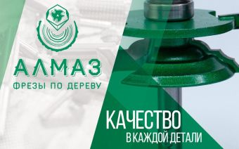

Материал компании

MITEX 2026 · Россия · Стенд 8В701
ФРЕЗЫ АЛМАЗ
Карточка проверена 10 ноября 2026, 09:25 · Источник ↗ · Снимок оригинальной карточки ↗
О компании
Наша фирма специализируется на фрезах для деревообработки. Модельный ряд компании включает разнообразные фрезы по дереву с твердосплавными ножами высшего уровня.
Контакты
Все контактные сведения из карточки
Контакты Веб-сайт: http://www.frezy-almaz.ru E-mail: frezy-almaz@yandex.ru Телефон: +79687877874
Все рубрики участника
Mitex - Рубрикатор
- 7. Контрольно-измерительное оборудование и инструмент, лазерная техника
- 10. Алмазный, твердосплавный инструмент и оснастка
Зал
- Зал № 8
Участник выставки
- MITEX